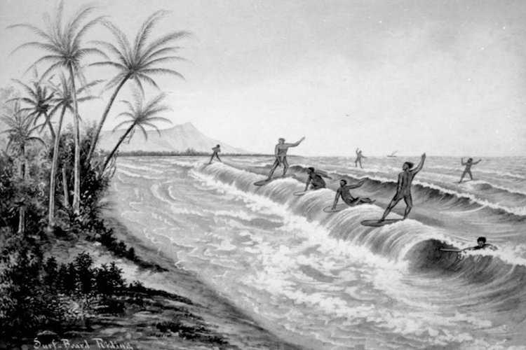
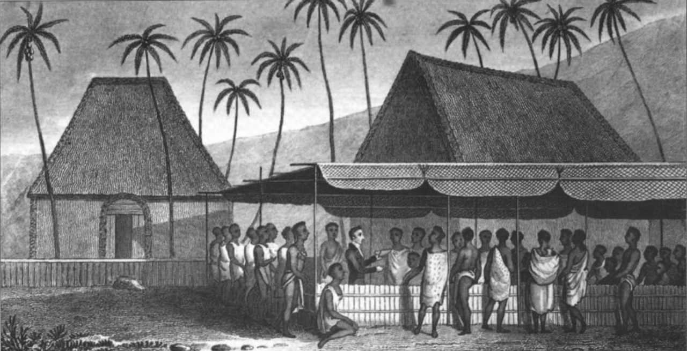

El surf como actividad espiritual
El surf era una práctica común entre los habitantes de las islas hawaianas desde el siglo XV. Servía para que los líderes tribales que se enfrentaban al mar para demostrar su poder y superioridad. Surfeaban con tablas de gran tamaño, llamadas Papa-he-nalu. Se cortaban del tronco de un árbol según un ritual antiguo. Los polinesios se retaban en duelos de surf, y el ganador obtenía un mejor lugar en la tribu. El surf era una actividad espiritual para los polinesios, profundamente arraigada en su religión y cultura.
La destrucción de la cultura del surf hawaiana
La publicación de libros sobre los viajes de Cook y King tras su regreso a Europa atrajo a exploradores y misioneros a las islas. Su llegada, por desgracia, provocó la aparición en las islas de enfermedades hasta entonces desconocidas, como la sífilis, la tuberculosis, etc. Según algunas estimaciones, la llegada de los colonizadores europeos provocó la muerte de casi el 90% de la población nativa hawaiana.Además, los misioneros establecieron su propio sistema religioso y económico en las islas, lo que provocó la destrucción de importantes elementos de la cultura local, y prácticamente mató la tradición del surf hawaiano.
